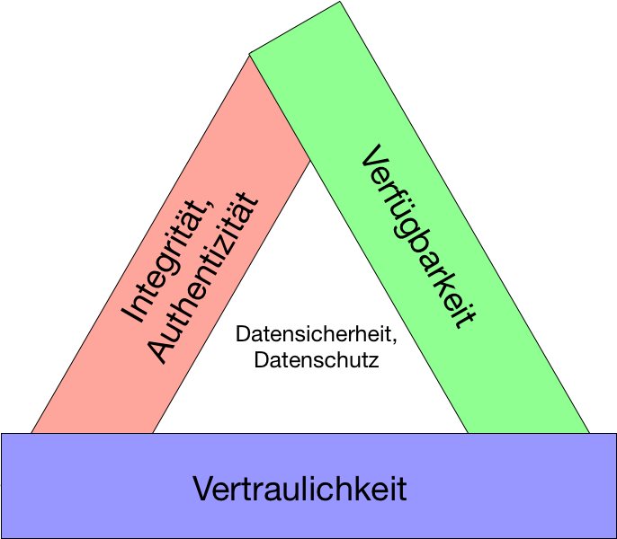

{% extends "../_base_template.html" %}
{% block title %}Lektion 9 - Datenschutz {% endblock %}

{% block sections %}
<section data-markdown>
<textarea data-template>
<i class="fas fa-graduation-cap"></i> M151 - DB in Web-App einbinden
=============================

Heutiges Ziel
--------------

* Sie wissen, was der Begriff „Datenschutz“ bedeutet
* Sie kennen die Begriffe „Vertraulichkeit“, „Integrität“, „Authentizität“ und „Verfügbarkeit“ und können diese erklären
</textarea>
</section>

<section data-markdown>
<textarea data-template>
<i class="fas fa-flask"></i> Datenschutz
=============================

**Daten schützen**

„Datenschutz“ - „Datensicherheit“ - was bedeutet dies?

_Fragen an die Schüler:_

* Was bedeutet für Sie Datenschutz?
* Was bedeutet für Sie Datensicherheit?
* Vor wem müssen Sie Daten schützen?
* Welche Daten müssen Sie schützen?

→ wir sammeln Input in der Klasse. Überlegen Sie sich kurz ein paar Stichworte zu den Fragen,
  und wir sammeln diese dann gemeinsam.

</textarea>
</section>

<section data-markdown>
<textarea data-template>
<i class="fas fa-flask"></i> Datenschutz
=============================

**Daten schützen**

„Datenschutz“ - „Datensicherheit“ - was bedeutet dies?

_Fragen an die Schüler:_ (Antworten vom letzten Jahr)

* Was bedeutet für Sie Datenschutz?
  * Daten nicht an Dritte weitergeben
  * Verwendung von Daten kontrollieren
  * Daten sicher abgelegt (im Sinne von „nicht für jedermann zugänglich“)
  * Datenmanipulation verhindern
* Was bedeutet für Sie Datensicherheit?
  * Unterschied: technische Umsetzung des Datenschutzes
  * Zugriff durch andere verhindern / einschränken
  * Verfügbarkeit
* Vor wem müssen Sie Daten schützen?
  * Leute, die nichts mit dem „Angebot“ zu tun haben
  * Hackern
  * Marketing-Nutzung der Daten
  * Schutz vor technischen Problemen
* Welche Daten müssen Sie schützen?
  * ...

</textarea>
</section>


<section data-markdown>
<textarea data-template>
<i class="fas fa-graduation-cap"></i> Datenschutz
=============================

* **Datenschutz** bedeutet, Daten und Informationen vor **„unberechtigtem Zugriff“** zu schützen.

* **Datensicherheit** bedeutet, dass die angeforderten Daten
  * **vollständig (Integer)** sind und
  * **von der angegebenen Quelle stammen (Authentisch).**

<i class="far fa-hand-point-right"></i> Was sind „Daten“ aus Sicht einer Web-Applikation?

* Inhalte aus Datenbank, welche auf der Webseite aufbereitet werden
* Dateien, welche via Web zugänglich / downloadbar sind

**Begriffe**

* „Vertraulichkeit“?
* „Integrität“?
* „Authentizität“?
* „Verfügbarkeit“?

(Erklären Sie!)

</textarea>
</section>

<section data-markdown>
<textarea data-template>
<i class="fas fa-graduation-cap"></i> Die drei Grundpfeiler der Datensicherheit
=============================



</textarea>
</section>

<section data-markdown>
<textarea data-template>
<i class="fas fa-graduation-cap"></i> Vertraulichkeit
=============================

* Daten sind vertraulich, wenn sie **nur Befugten in zulässiger Weise zugänglich** sind.
* Informationen müssen also **klassifiziert** werden:
  * Welche Daten sind öffentlich?
  * Welche Daten stehen nur einem bestimmten Benutzerkreis zur Verfügung?
  * Darf dieser Nutzerkreis die Daten bearbeiten, oder nur lesen?
* Je nach Klassierung der Daten in eine Vertraulichkeitsstufe sind strengere Massnahmen zu definieren,
  die die Vertraulichkeit gewährleisten, **zum Beispiel**:
  * Helpdesk-Mitarbeiter müssen eine **Vertraulichkeitsvereinbarung** unterschreiben, dürfen dann aber alle Daten einsehen
  * Vertrauliche Daten müssen verschlüsselt gespeichert, transportiert und archiviert werden
  * Normale Mitarbeiter dürfen keinen Zugriff auf Personalakten haben (Lese-Schutz), Mitarbeiter des Human Resource schon
  * öffentliche Daten müssen vor falscher Manipulation geschützt werden (Schreibschutz)
</textarea>
</section>

<section data-markdown>
<textarea data-template>
<i class="fas fa-graduation-cap"></i> Integrität und Authentizität
=============================

**Integrität** bedeutet:
* dass jedes Objekt der Informationsverarbeitung **vollständig, unverfälscht und korrekt** ist.
* dass diese Objekte **nicht verändert**, verfälscht oder gefälscht werden können.

<i class="far fa-hand-point-right"></i> Es wird unterschieden zwischen Integrität von Programmen und Integrität von Informationen:

**Integrität von Programmen** bedeutet:
* dass nur autorisierte Funktionen ausgeführt werden können (Nur Admins dürfen Benutzer verwalten, z.B.)
* dass die Funktion auch (nur) das tut, was deren Bestimmung ist
* dass Schutzmassnahmen getroffen werden, um das Verändern der Funktionalität zu verhindern
  (z.B. durch Viren, Backdoors, logische Bomben...)

**Integrität von Informationen** bedeutet:
* die Daten werden korrekt verarbeitet
* die Daten sind vollständig
* die Daten sind aktuell

**Authentizität** bedeutet:
* den Nachweis zu erbringen, dass jemand oder etwas wirklich das ist, was es vorgibt
* vereinfacht gesagt: dass man sicher sein kann, dass die Datenanforderung vom dem stammt, den er vorgibt zu sein.

<i class="far fa-hand-point-right"></i> Grob zusammengefasst:

**Integrität bedeutet, dass das Programm richtig funktioniert / die Informationen korrekt sind.<br />
Authentizität bedeutet, dass die Informationen nachweisbar aus der angegeben Quelle stammen.**
</textarea>
</section>

<section data-markdown>
<textarea data-template>
<i class="fas fa-graduation-cap"></i> Verfügbarkeit
=============================

Daten müssen **verfügbar** sein, d.h. man muss auch wirklich darauf zugreifen können.

Daten müssen aber **nicht immer GLEICH** verfügbar sein:
* Beispiel: Real-Time-Börsendaten: Im Börsengeschäft geht es um Millisekunden. Stehen dort Daten nicht sofort zur Verfügung,
  kann dies zu Verlustgeschäften führen.
* Beispiel: Monatsstatistik: Eine Monatsstatistik muss 1) nicht in Millisekunden verfügbar sein, und 2) reicht es,
  wenn diese in den nächsten Tagen nach Monatsende verfügbar ist.

<i class="far fa-hand-point-right"></i> Das bedeutet, dass Sie je nach Anforderung entsprechende Massnahmen ergreifen müssen,
um die geforderte Verfügbarkeit garantieren zu können.
</textarea>
</section>

<section data-markdown>
<textarea data-template>
<i class="fas fa-graduation-cap"></i> Rechtliche Vorschriften
=============================

**Datenschutzvorschriften** bestimmen nicht das WIE, sondern nur das WAS und IN WELCHEM MASSE geschützt werden muss.

Als Grundlage dient immer das **Schweizerische Datenschutz-Gesetzt (DSG)**:

https://www.admin.ch/opc/de/classified-compilation/19920153/index.html

Es gibt aber auch Vorschriften, die verlangen, dass z.B. gewisse Datenbestände (Buchhaltung, Log-Daten) eine bestimme Zeit lang aufbewahrt werden.

Aktuelles Beispiel: **DSVGO** (Datenschutz-Grundgesetz der EU):

https://dsgvo-gesetz.de/

Hier wird vor allem geregelt, wer was mit welchen Daten wo/mit wem machen darf.
</textarea>
</section>

<section data-markdown>
<textarea data-template>
<i class="fas fa-graduation-cap"></i> Technische und organisatorische Massnahmen zum Datenschutz
=============================

Wie wird nun dieser Datenschutz sichergestellt? Die Vorschriften definieren nicht, wie die Daten geschützt werden müssen,
sondern nur was und wie stark dieser Schutz sein muss.

**Stellen Sie Regeln auf**

Viele Datenschutz-Massnahmen lassen sich mit verbindlichen Regeln lösen:

Mitarbeiter im Support z.B. müssen eine „Vertraulichkeitsvereinbarung“ unterzeichnen. Sie kommen naturgemäss mit sensitiven
Daten in Kontakt, dies kann keine technische Massnahme verhindern.
Es muss aber klar geregelt sein, was diese Mitarbeiter mit den Daten dürfen.

Diese Vorschriften müssen Sie allerdings auch durchsetzen / kontrollieren.

**Technische Massnahmen**

„Vertrauen ist gut, Kontrolle ist besser“: So könnte man technische Massnahmen verstehen:
Durch technische Massnahmen wird sichergestellt, dass die „Vertraulichkeit“, „Integrität“, „Authentizität“ und
„Verfügbarkeit“ auch durchgesetzt werden kann.

Welche technischen Massnahmen kennen Sie, um diese 4 Begriffe des Datenschutzes eingehalten werden können?

<i class="far fa-hand-point-right"></i> Zählen Sie auf!

(Diskussion mit der Klasse / Flipchart)

</textarea>
</section>

<section data-markdown>
<textarea data-template>
<i class="fas fa-graduation-cap"></i> Technische und organisatorische Massnahmen zum Datenschutz
=============================

**Technische Massnahmen** zum Datenschutz

(mögliche) Lösung der Frage von oben:

* Vertraulichkeit:
  * Benutzerverwaltung implementieren
  * Rollen-System implementieren
  * Rechte-Verwaltung implementieren: Zugriff auf Daten nur für berechtigte Benutzer / Rollen gewähren.
  * SSL-Verschlüsselung
* Integrität:
  * Datenbank-Transaktionen
  * Datei-Hashes (sieht man viel auf Download-Portalen)
  * Kryptographie-Signaturen
* Authentizität
  * Benutzerverwaltung
  * Login-Mechanismus
* Verfügbarkeit
  * Hardware-Redundanzen (doppeltes Führen von wichtigen Komponenten)
  * Rechenpower (bei intensiven Kalkulationen)

</textarea>
</section>

<section data-markdown>
<textarea data-template>
<i class="fas fa-flask"></i> Angriffe von aussen
=============================

Kritisch wird die Situation, wenn Ihre Web-Applikation und somit einen Teil der Firmendaten im Internet verfügbar sind.
Hier reichen Regeln und Verbote nicht. Auch einfache Passwortabfragen reichen vielmals nicht,
um einen genügenden Schutz zu gewähren.

**Hausaufgabe**

Überlegen Sie sich folgendes:
* Vor wem (oder was) müssen Sie Ihre ( öffentlich zugängliche ) Web-Applikation schützen?
* Was für Angriffsmöglichkeiten existieren, um Ihre Web-Applikation zu knacken / an unbefugte Daten zu gelangen?

**Erstellen Sie eine Liste mit Antworten zu diesen beiden Fragen!**

</textarea>
</section>
{% endblock %}
